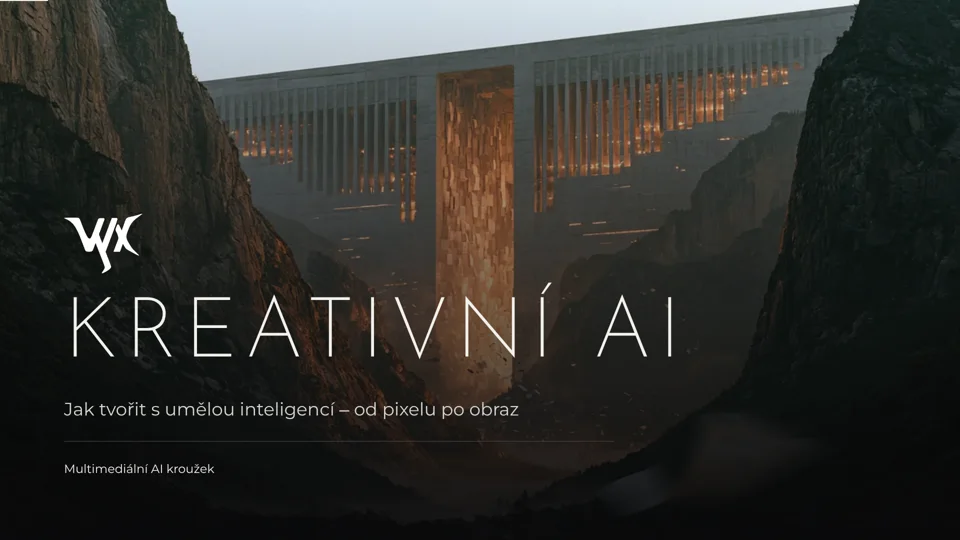
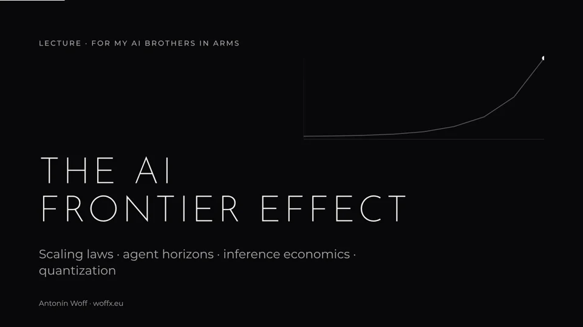

Jak tvořit s umělou inteligencí, od pixelu po obraz. Jak neuronka vidí obrázek, seed, formy AI, anatomie promptu a praktická část.
ČESKY · 20 SLIDŮ · MULTIMEDIÁLNÍ AI KROUŽEK
Scaling laws, agent horizons, inference economics and quantization. How fast the edge of AI spreads into cheaper models and real work.
ENGLISH · 9 SLIDES · LECTURE